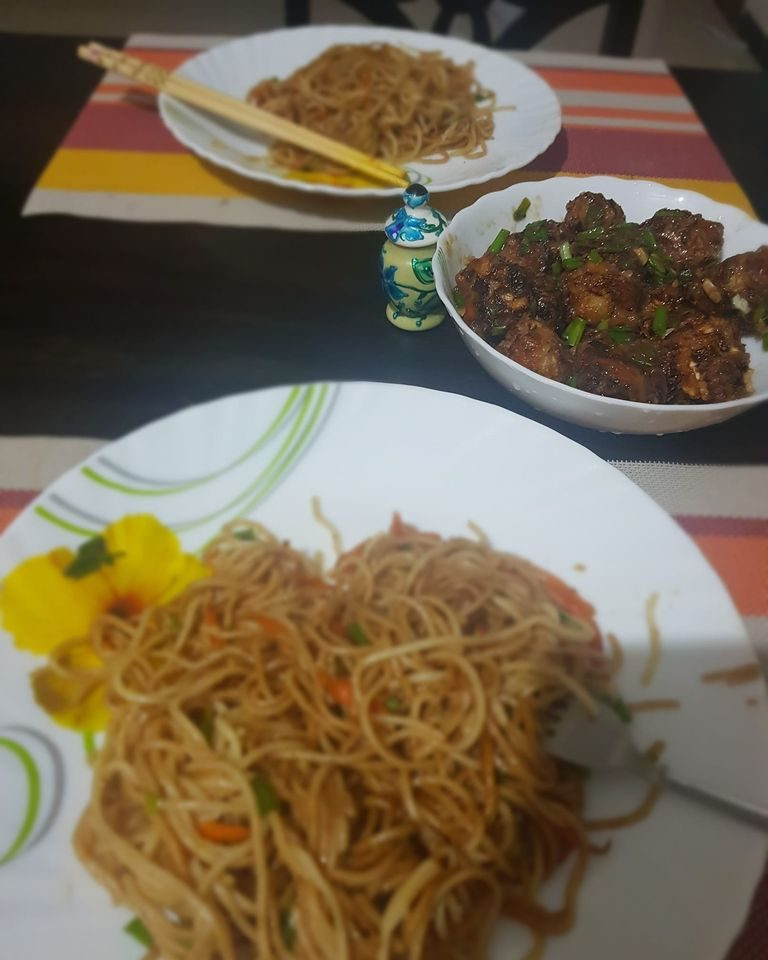

Veg Manchurian in Gravy
fried vegetable balls in a dark garlicky soy gravy for spooning over rice

Contains: gluten, soy
Checked against the ingredient list for ten allergens: milk, egg, fish, crustaceans, tree nuts, peanuts, sesame, mustard, soy and gluten. Brands vary, so read the label on anything new to you.
Ingredients
Quantities for 4.
- 300g, grated very fine Cabbage
- 2, grated Carrot
- 10, chopped very fine French Beans
- 1, half in the balls and half in the gravy Capsicum
- 4 tbsp Maidabinds the balls
- 7 tbsp Cornflour3 in the balls, 4 for the gravy
- 14 cloves, finely chopped Garlic
- 1.5 tbsp, finely chopped Ginger
- 3, finely chopped Green Chilli
- 5, whites and greens separated Spring Onion
- 3 tbsp Soy Sauce
- 1.5 tbsp Vinegar
- 1 tsp, crushed Black Pepper
- 1.5 tsp Sugar
- 1 tsp Kashmiri Chillifor the colour of the gravy
- 500ml for frying, plus 2 tbsp for the gravy Neutral Oil
- to taste Salt
- 700ml Water
- 2 tbsp, chopped Coriander Leavesto finishoptional
Cookware
stovetop, kadhai
Before you start
- Salt the grated cabbage and carrot and leave them 15 minutes, then squeeze out the water hard with both hands. Wet mixture will not hold a ball.
- Keep that squeezed vegetable water. It makes a better gravy base than plain water.
- The balls can be fried up to 3 hours ahead and held at room temperature; make the gravy just before serving.
- This is a deep-fried dish. Line a tray with paper before you start.
Method
- Squeeze the salted cabbage, carrot and beans dry and mix with half the chopped capsicum, half the garlic, 1 tbsp ginger, the green chilli and the spring onion whites.
- Work in the maida, 3 tbsp cornflour, 1/2 tsp pepper and 1/2 tsp salt until the mixture just holds when pressed in your palm.Add no water at all. If it will not hold, squeeze harder rather than adding more flour. Extra flour makes heavy balls.
- Roll into 18 walnut-sized balls, pressing each one firmly so it does not open up in the oil.
- Heat the oil in a kadhai to 175C and fry the balls in three batches for 5 minutes each, turning, until deep brown and crisp. Drain on paper.Slide the first ball in as a test. If it breaks apart, press the rest tighter and add 1 more tbsp cornflour.
- For the gravy, heat 2 tbsp oil on a high flame and fry the remaining garlic for 1 minute until it just turns pale gold.
- Add the remaining capsicum and the kashmiri chilli and stir 1 minute.
- Pour in 700ml water with the soy sauce, vinegar, sugar, remaining pepper and 1/2 tsp salt, and boil for 3 minutes.
- Slake 4 tbsp cornflour in 100ml cold water and pour it in slowly, stirring, until the gravy is glossy and just thick enough to coat a spoon, about 2 minutes.Add the slurry in two goes and stop when it looks slightly thinner than you want. It sets further off the heat.
- Drop the balls into the simmering gravy, switch off the heat and let them stand 2 minutes to drink a little sauce.
- Finish with the spring onion greens and coriander and serve over steamed rice or fried rice.
Storage
Store the balls and gravy separately, up to 3 days refrigerated, and combine on reheating. Together they go soft overnight. Reheat the gravy with a splash of water to loosen it.
Nutrition Good estimate
Low protein: 8 g a serving, 8% of the calories
| Per serving398 g | Per 100 g | |
|---|---|---|
| Calories | 435 kcal | 110 kcal |
| Protein | 8.2 g | 2 g |
| Carbohydrate | 63.4 g | 16 g |
| of which sugars | 11.7 g | 3 g |
| Fibre | 9.3 g | 2 g |
| Fat | 18.3 g | 5 g |
| of which saturated | 2.0 g | 0 g |
| of which unsaturated | 15.3 g | 4 g |
Estimated from raw ingredients using USDA FoodData Central.
Written and checked against sources, not cooked in a test kitchen. Times, yields, allergens and nutrition are worked out rather than measured, so use your own judgement on doneness and on storing. More in About.